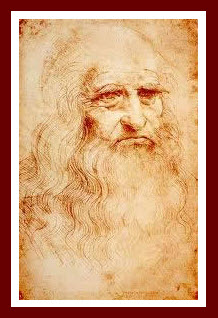
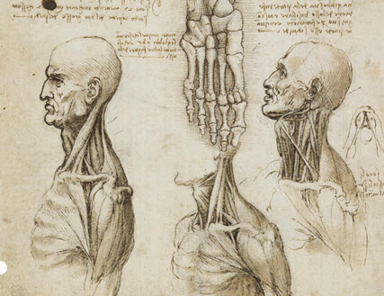

|  |
|
Ghose, Tia. (5 June 2014). Self-Por trait of Leonardo da Vinci. [Photog raph].Retrieved from: http://www. foxnews.com/science/2014/06/05/van ishing-da-vinci-portrait-could-be- saved-by-science/ |
In 1467, Leonardo da Vinci studied painting, sculpture, and technical and mechanical skills in an apprenticeship. Five years later, he was accepted into a painters' guild in Florence. By that time, he had already learned how to sketch machinery and military weapons with accuracy. Around that time, he became apprenticed to Andrea del Verrochio who practiced art, craftsmanship, sculpting, and goldsmith work. Intrigued, Leonardo studied the science behind real world objects to lend his paintings a realistic aspect. For instance, often he walked by the river Arno sketching rock formations, caves, and fossils. Assumedly because of his intense learning focus, Leonardo enjoyed very few close friends.
Many years later, despite the popular belief of the time that experimentation, especially on the human body, was heresy, and despite his failed attempts to uncover the secrets of the "Supreme Master," as he called God, Leonardo remained as undeterred as a rock while he studied anatomy and flight.
http://www.socialphy.com/posts/art/7969/The-Drawings-of-Leonardo-da-Vinci.html
In dissecting corpses, he discovered the mechanics behind every muscle and nerve of the human body. For instance, he observed the eye socket, the optic nerve entering the brain, tends, muscles, and the skeleton. With genuine delight, he also discovered that the biceps not only bent the arms, but also turned the palms face-up. In Leonardo's eyes, the body was a miracle. He respected the body, the living machine, so much that he used its mechanics to create the lever.